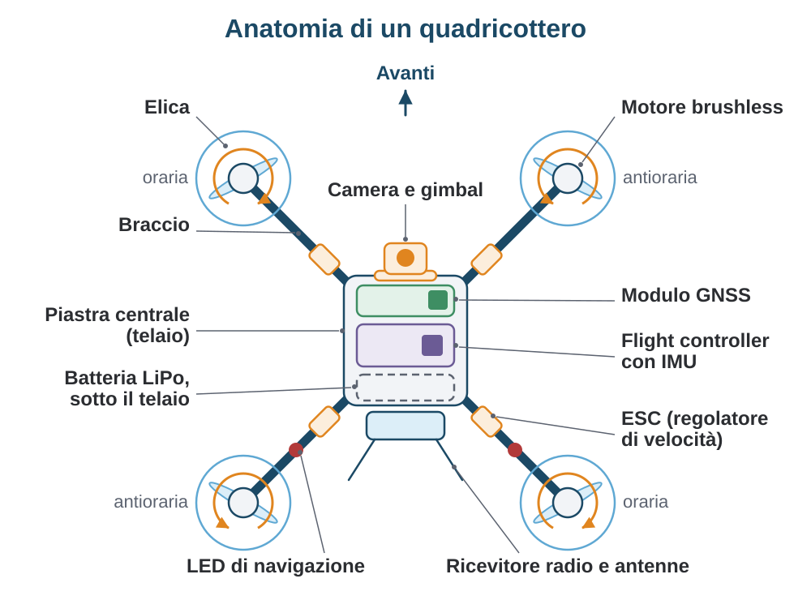
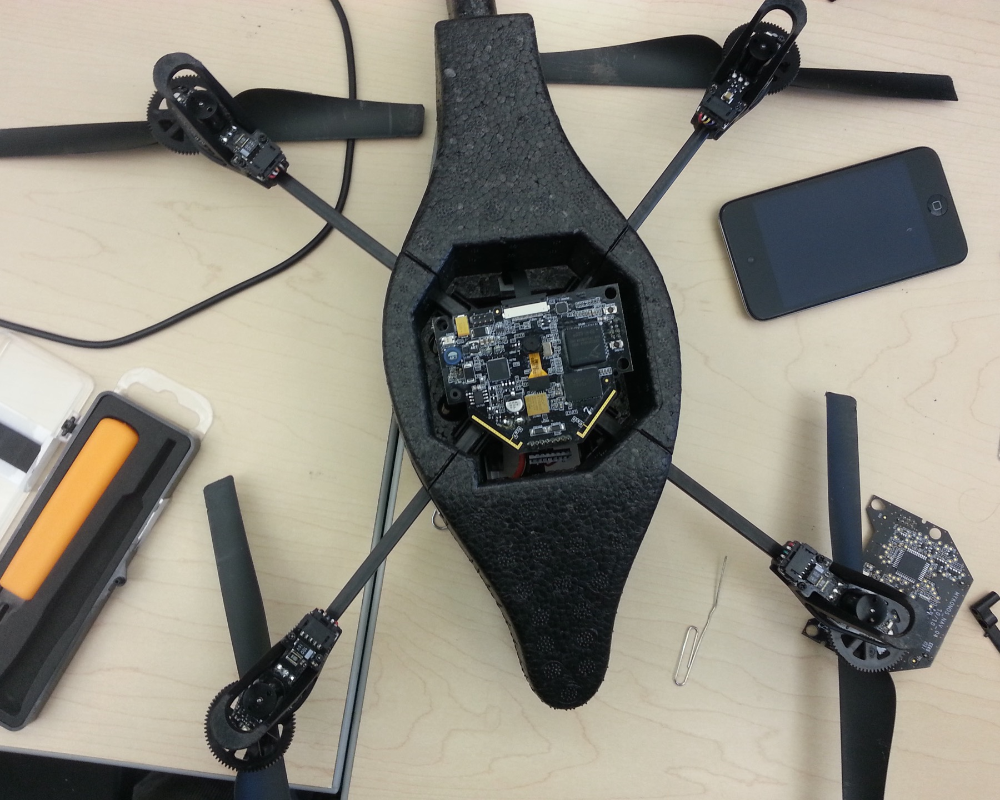
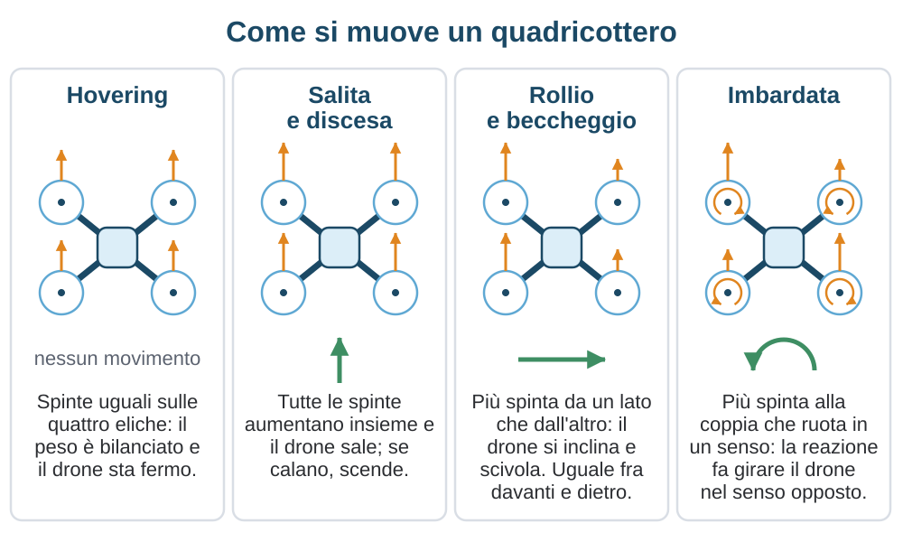

Anatomia e funzionamento
Un drone è un insieme di sottosistemi che si reggono a vicenda: una struttura rigida, quattro azionamenti trifase, una batteria che eroga correnti da avviamento d'auto e un calcolatore che corregge l'assetto migliaia di volte al secondo. Questo capitolo apre la macchina e spiega cosa fa ogni pezzo e quali numeri contano in una scheda tecnica.
- Vista d'insieme
- Il telaio
- La propulsione
- L'alimentazione
- Il cervello e i sensori
- Come si muove
- Modalità di volo
- Il software
- In sintesi
Fonti normative verificate il 20 settembre 2026.
2.1 Vista d'insieme
Come caso di studio usiamo il quadricottero, la macchina più diffusa: la stessa architettura copre il giocattolo da interni, il drone pieghevole da 249 g e il mezzo professionale da rilievo. Ha quattro rotori a passo fisso e nessuna superficie mobile, cioè un solo attuatore ripetuto quattro volte.
La semplicità meccanica si paga sul controllo: senza elettronica attiva un quadricottero non resta in aria un secondo, perché è instabile su tutti e tre gli assi. Tutto ciò che segue esiste per chiudere quell'anello.
- Struttura. Telaio, bracci e coperture: tengono i motori a distanza fissa dal baricentro.
- Propulsione. Quattro gruppi motore ed elica con i rispettivi regolatori, unico organo di comando.
- Alimentazione. Batteria e distribuzione di potenza: decidono autonomia, peso e gran parte dei rischi.
- Controllo. Il flight controller, microcontrollore più unità inerziale, che stabilizza la macchina.
- Navigazione. Ricevitore satellitare, barometro, magnetometro e sensori ottici: dicono dove sei.
- Radio. Comando, video e telemetria con le antenne, argomento del capitolo 3.
- Carico utile. Camera su sospensione cardanica o sensori, integrati o intercambiabili.

2.2 Il telaio
Il telaio deve essere leggero e rigido insieme. La fibra di carbonio domina per rigidezza specifica e costo, ma è conduttiva: attenua i segnali radio e fa ombra al ricevitore satellitare, quindi antenne e modulo GNSS si montano fuori dalle piastre. Le plastiche tecniche, dal nylon caricato al policarbonato, assorbono l'impatto e sono trasparenti alle radiofrequenze: da qui i gusci dei droni consumer. Magnesio e alluminio restano ai bracci dei mezzi professionali.
I bracci hanno tre disposizioni classiche. Nella “+” un braccio punta in avanti, quindi ogni comando di rollio o beccheggio agisce su due soli motori. Nella X stanno a 45° dagli assi: tutti e quattro i motori contribuiscono a ogni comando e la camera guarda fra due bracci, ed è per questo che la X ha vinto. La H allunga il corpo in un rettangolo e guadagna spazio interno. La taglia si esprime con la diagonale fra gli assi di due motori opposti: una macchina da 5 pollici di elica sta intorno ai 220 mm, una da 7 pollici sui 300 mm. I bracci pieghevoli dei droni consumer riducono l'ingombro al prezzo di una cerniera, un punto meno rigido.
La rigidezza non è pignoleria. Motori ed eliche eccitano la struttura alla frequenza di rotazione e ai suoi multipli, e il giroscopio al centro legge quella vibrazione come una rotazione vera. L'unità inerziale campiona a qualche kHz, quindi le componenti sopra la frequenza di Nyquist rientrano in banda come alias, indistinguibili dal segnale. Le contromisure sono meccaniche: eliche bilanciate, telaio rigido, scheda su smorzatori.
2.3 La propulsione
Il motore brushless
I droni usano motori sincroni a magneti permanenti di tipo outrunner: lo statore avvolto sta fermo al centro, la campana esterna con i magneti è il rotore e porta direttamente l'elica. Rispetto a un inrunner dà più coppia e meno giri, che è ciò che serve per trascinare un'elica senza riduttore.
La sigla dimensionale descrive lo statore: 2207 significa 22 mm di diametro e 7 mm di altezza del pacco lamellare, e uno statore più alto dà più coppia e più peso. L'altro numero di targa è la costante KV, i giri al minuto per volt a vuoto: un 2207 da 1750 KV a 22,2 V nominali gira intorno a 39.000 giri/min. Poiché la costante di coppia è l'inverso di quella di velocità, KV alto significa molti giri e poca coppia per ampere: eliche piccole e KV alti sulle macchine agili, il contrario sui mezzi da carico.
Il regolatore elettronico
Il regolatore, o ESC, è un inverter trifase che sintetizza le tre fasi alla frequenza giusta, modulando la tensione media con la larghezza degli impulsi.
Il comando arriva su un solo filo: un tempo un impulso analogico da 1000 a 2000 µs ereditato dal modellismo, oggi i protocolli digitali della famiglia DShot. Il valore di spinta viaggia in un pacchetto di 16 bit, con 11 bit di comando, un bit di richiesta telemetria e 4 bit di controllo a ridondanza ciclica, fra 150 e 1200 kbit/s. Il pacchetto è verificato e, nelle varianti bidirezionali, riporta il numero di giri effettivo, usato per filtrare le vibrazioni alla frequenza esatta.
Sulle macchine compatte i quattro regolatori stanno su una sola scheda, detta 4-in-1, impilata sotto il flight controller. Le correnti non sono trascurabili: in transitorio un motore da 5 pollici assorbe decine di ampere e una manovra brusca porta il totale oltre il centinaio, quindi si dimensiona sui picchi.
Le eliche
L'elica si identifica con tre numeri, per esempio 5x4,3x3: diametro in pollici, passo in pollici, numero di pale. Il passo è l'avanzamento teorico in un giro, quindi passo alto significa più velocità e più corrente. A parità di geometria la spinta cresce con il quadrato dei giri e la quarta potenza del diametro, la potenza assorbita con il cubo e la quinta: un disco grande che gira piano consuma meno, ed è per questo che i droni da lunga autonomia hanno eliche grandi.
I materiali vanno dal policarbonato caricato, elastico e perdonante, ai compositi in carbonio, rigidi ed efficienti ma distruttivi in caso di contatto. L'elica va bilanciata: uno squilibrio di frazioni di grammo a 20.000 giri/min scuote tutta la macchina. Sono materiale di consumo: porta un ricambio completo e monta le protezioni negli ambienti chiusi. Il senso di rotazione è alternato fra le due diagonali e i mozzi sono filettati di conseguenza.

| Componente | Funzione | Parametri chiave |
|---|---|---|
| Batteria | Fornisce energia e corrente di picco | Tensione nominale, energia in Wh, corrente erogabile |
| Regolatore | Converte la continua in tre fasi | Corrente continua e di picco, tensione massima, protocollo |
| Motore | Trasforma la potenza elettrica in coppia | Sigla dello statore, KV, resistenza di fase, peso |
| Elica | Trasforma la coppia in spinta | Diametro, passo, numero di pale, materiale |
2.4 L'alimentazione
Due chimiche si dividono il campo. Le celle ai polimeri di litio, dette LiPo, hanno resistenza interna bassissima e reggono correnti enormi rispetto alla capacità: sono obbligate quando conta la potenza istantanea. Le celle agli ioni di litio cilindriche immagazzinano circa il doppio di energia per chilogrammo ma erogano correnti molto più modeste, e si usano dove il volo è a potenza moderata: ali fisse, mappatura, multirotori da lunga autonomia.
I valori di tensione per cella vanno imparati a memoria: 3,7 V nominali, 4,2 V a piena carica, 3,5 V come soglia prudente per rientrare, 3,0 V come limite oltre il quale la cella si danneggia. Le celle si collegano in serie e la sigla lo dichiara: 4S sono quattro celle per 14,8 V nominali e 16,8 V a piena carica, fino ai 6S delle macchine da prestazione. Il parallelo, indicato con P, somma le capacità.
La capacità si dà in milliampereora, ma il numero che conta è l'energia in wattora, cioè tensione nominale per capacità in ampereora. Un pacco 4S da 1500 mAh contiene 14,8 × 1,5 = 22,2 Wh. Se il volo assorbe in media 250 W l'energia teorica basta per poco più di cinque minuti; usando l'80% del pacco restano poco più di quattro minuti.
La corrente massima si esprime con il C-rating, un moltiplicatore della capacità: 100C su un pacco da 1500 mAh significa 1,5 × 100 = 150 A dichiarati. Prendilo con prudenza, perché è misurato per pochi secondi a pacco pieno. L'indicatore onesto è la caduta di tensione sotto carico.

Sui droni consumer il pacco è una smart battery: un'elettronica integrata misura tensione di cella, corrente e temperatura, bilancia in carica, conta i cicli e si autoscarica alla tensione di conservazione dopo alcuni giorni di inattività. Sui pacchi da modellismo lo fai tu: carica sempre in modalità bilanciata e, se non voli entro un giorno o due, porta le celle a 3,8-3,85 V. Al freddo la resistenza interna sale e l'autonomia cala, quindi in inverno i pacchi si tengono al caldo.
| Caratteristica | LiPo | Li-ion cilindriche |
|---|---|---|
| Energia specifica | Media: privilegia la potenza | Circa doppia a parità di peso |
| Scarica | Molto alta, decine di C | Bassa, pochi C continuativi |
| Resistenza interna | Bassissima, poca caduta | Più alta, caduta sensibile ai picchi |
| Al freddo | Degrada, ma regge i picchi | Soffre di più |
| Uso tipico | Multirotori acrobatici, FPV, droni compatti | Ali fisse, mappatura, lunga autonomia |
2.5 Il cervello: flight controller e sensori
Il flight controller è una scheda piccola, spesso 36 mm di lato, costruita intorno a un microcontrollore a 32 bit della famiglia ARM Cortex-M. Non serve potenza di calcolo, serve determinismo: poche centinaia di microsecondi di ritardo contano più di qualche MHz.
Il sensore fondamentale è l'unità di misura inerziale, o IMU: giroscopio e accelerometro a tre assi in un integrato MEMS, campionati a qualche migliaio di campioni al secondo. Il giroscopio dà la velocità angolare e regge il controllo di assetto; l'accelerometro ritrova la verticale, perché a macchina ferma legge la gravità. Il giroscopio da solo deriva, l'accelerometro da solo è inutilizzabile in volo: il primo comanda sul breve periodo, il secondo fa da riferimento lento.
Il barometro ricava dalla pressione assoluta una quota relativa, ma risente delle variazioni meteorologiche, del vento attorno al telaio e della scia delle eliche: dà una quota affidabile su tempi brevi e una deriva lenta su tempi lunghi. Il magnetometro fornisce la direzione della prua ed è il più facile da disturbare, perché un cavo che porta decine di ampere o l'armatura di un tetto deformano il campo locale: da qui i frequenti errori di bussola. Il ricevitore GNSS dà posizione e velocità rispetto al suolo ed è trattato nel capitolo 3.
Vicino al terreno servono altri sensori. L'optical flow è una camera rivolta verso il basso che misura lo spostamento dell'immagine fra un fotogramma e l'altro: abbinata a un telemetro che dà la scala, stima la velocità orizzontale e tiene la posizione senza satelliti, purché ci siano luce e texture al suolo. I telemetri, a ultrasuoni o a tempo di volo, si perdono su erba alta e soffrono il sole diretto; gli stessi principi, in versione stereoscopica, alimentano i sistemi anticollisione dei droni consumer.

Queste letture, discordanti e rumorose, confluiscono in un filtro di Kalman esteso, che mantiene assetto, velocità e posizione con la relativa incertezza e li corregge a ogni misura, pesando ciascun sensore secondo quanto è affidabile. Sopra lo stimatore sta il controllo, in anelli PID in cascata: il più interno regola la velocità angolare e gira alla frequenza del giroscopio, il suo riferimento arriva dall'anello di assetto, e sopra ancora, quando la modalità lo prevede, un anello di velocità e uno di posizione a poche decine di hertz. Se il segnale satellitare degrada, i due anelli esterni si aprono e la macchina scala di modalità.
2.6 Come si muove
Quattro rotori a passo fisso, due orari e due antiorari, con le eliche opposte sulla diagonale che girano nello stesso verso. Ogni rotore produce una spinta verso l'alto e, per reazione, una coppia sul telaio opposta al proprio verso di rotazione.
In volo stazionario le quattro spinte eguagliano il peso e le coppie si annullano a due a due. Per salire il controllo aumenta le quattro spinte insieme. Per inclinarsi aumenta la spinta sui due motori di un lato e la riduce sull'altro: nasce una coppia che ruota la macchina di rollio o di beccheggio. Il vettore di spinta non è più verticale, e la sua componente orizzontale spinge il drone avanti o di lato. Un quadricottero non può traslare senza inclinarsi, e inclinarsi sottrae al sostentamento parte della spinta.
L'imbardata sfrutta le coppie di reazione: il controllo accelera la diagonale che gira in un verso e rallenta l'altra della stessa quantità, così la spinta totale e la quota non cambiano, ma le coppie non si annullano più e la macchina ruota attorno all'asse verticale. È la manovra più lenta, perché dipende dall'attrito aerodinamico delle eliche.

Nessuna di queste manovre coinvolge parti mobili oltre ai rotori: non ci sono alettoni, timoni né passo variabile. Tutto dipende dalla rapidità con cui i motori cambiano regime, cioè dall'inerzia del gruppo motore-elica e dalla banda del regolatore.
Esacotteri e ottocotteri seguono la stessa logica con sei o otto rotori, e la ragione è la ridondanza: con un motore in avaria restano spinta e coppie sufficienti perché, secondo configurazione e carico, la macchina resti controllabile fino a un atterraggio di emergenza. Su un quadricottero la perdita di un motore significa quasi sempre la caduta.
2.7 Modalità di volo e automatismi
Le modalità di volo sono livelli diversi di automazione sopra lo stesso hardware. Cambia solo quale anello di controllo riceve i tuoi comandi, e quanto lavoro resta a te.
| Modalità | Cosa comanda lo stick | Se rilasci gli stick |
|---|---|---|
| Manuale o acro | Velocità angolare sui tre assi | Mantiene l'inclinazione che ha |
| Stabilizzata o angle | Angolo di inclinazione, entro un limite | Torna orizzontale, ma va alla deriva |
| Posizione o GNSS hold | Velocità rispetto al suolo | Si ferma e tiene posizione e quota |
La modalità manuale, chiamata acro, passa i comandi all'anello più interno: gli stick chiedono velocità di rotazione e la macchina non si raddrizza da sola. È innaturale all'inizio e indispensabile per il volo FPV, perché è l'unica che consente manovre oltre l'assetto orizzontale. La stabilizzata inserisce l'anello di assetto, quindi lo stick corrisponde a un angolo entro un limite, ma non tiene la posizione: senza satelliti il vento porta via il drone. La modalità di posizione chiude anche gli anelli di velocità e posizione, e al centro degli stick il drone si pianta in aria.
Sopra le modalità stanno gli automatismi. Il rientro automatico, o RTH, riporta la macchina a un punto memorizzato al decollo, ed è la reazione tipica del failsafe, la logica che decide cosa fare quando il collegamento di comando si interrompe: le alternative sono restare fermi, atterrare o rientrare, e la scelta dipende dal contesto, come spiega il capitolo 7. Le missioni a waypoint percorrono una rotta programmata, ed è così che si eseguono i rilievi fotogrammetrici. Le funzioni follow-me tengono il soggetto nell'inquadratura, e il geofence è un limite software di quota e distanza, accompagnato da banche dati delle zone in cui il volo è limitato.
2.8 Il software
Il comportamento di un drone è deciso dal firmware più che dall'hardware, e il panorama si divide in due mondi. Da un lato i firmware aperti su schede generiche: Betaflight è lo standard dell'FPV, con filtri configurabili e registrazione dei dati di volo per l'analisi a terra; iNav aggiunge navigazione satellitare, rientro automatico e waypoint; ArduPilot e PX4 giocano un altro campionato, con stimatori sofisticati e integrazione con un calcolatore di bordo, e sono la base dei droni autonomi e professionali. Tutti si configurano da personal computer, e gli ultimi due parlano MAVLink, il protocollo descritto nel capitolo 3.
Dall'altro lato i firmware proprietari dei droni consumer integrati: chiusi, non configurabili oltre le opzioni dell'app, aggiornati via applicazione. In cambio offrono un'integrazione che nessun assemblaggio raggiunge: sensori, radio, camera, batteria e limiti di volo sono collaudati come un unico prodotto. Nel firmware risiedono anche la consapevolezza geografica e i moduli per l'identificazione a distanza.
Queste ultime non sono dettagli tecnici: marcature di classe, identificazione a distanza e consapevolezza geografica dipendono da cosa gira dentro la macchina, e un aggiornamento può cambiare ciò che il drone è autorizzato a fare. Il quadro è nel capitolo 4. La regola pratica è aggiornare a casa, mai in campo il giorno del volo; vale anche per l'app di controllo, che spesso rifiuta di far decollare il drone finché non è allineata al firmware. Un simulatore, infine, costa quanto un'elica e ti fa sbagliare mille volte senza conseguenze.
In sintesi
- Il quadricottero è semplice e intrinsecamente instabile: vola solo perché un anello di controllo lo corregge migliaia di volte al secondo.
- La taglia si misura in diagonale fra motori opposti, e la X domina perché tutti e quattro i motori agiscono su ogni asse.
- Le vibrazioni entrano nel giroscopio e degradano il controllo; sopra la frequenza di Nyquist nessun filtro le recupera.
- Motore e regolatore formano un azionamento trifase sensorless: il KV lega giri e coppia, l'elica traduce coppia in spinta secondo leggi di scala ripide.
- Della batteria contano l'energia in wattora, la tensione per cella e la caduta sotto carico; il C-rating dichiarato è ottimistico.
- Le celle al litio non perdonano sovraccarica e rigonfiamenti: carica bilanciata e sorvegliata, conservazione a 3,8-3,85 V per cella.
- Il controllo è una cascata di anelli, dal più veloce sulla velocità angolare al più lento sulla posizione, alimentata da sensori imperfetti.
- Le modalità di volo differiscono solo per quale anello riceve i tuoi comandi: i nomi cambiano fra produttori, la logica no.